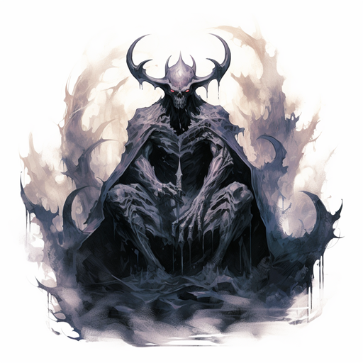
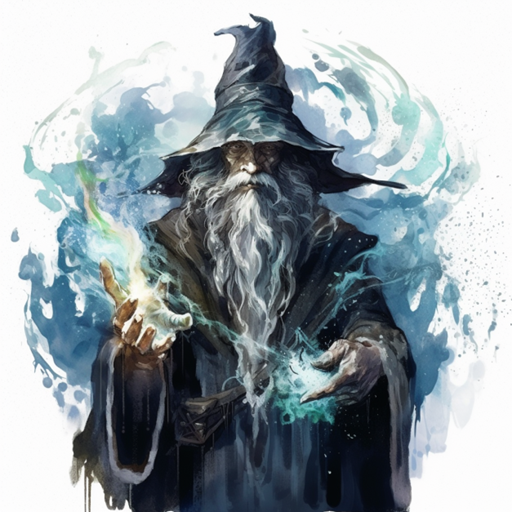

Supreme Beings
Phaet

Phaet. Phaet is everything, everywhere, and everywhen. Phaet is the all. The creator. Before time, before space, there was Phaet. From, and by, Phaet all that is, became. Feeling the need for companionship, Nixil, came to be. Nixil was the first. An experiment without a control, without guidelines. If Phaet is capable of regret, Nixil is regrettable. Others followed, becoming what Phaet had intended Nixil to be. These 'gods' as they would come to be called were of Phaet as was Nixil, but to a much lesser degree. Nixil harassed and tormented these gods, and always argued with Phaet. When Phaet created what mortals know as matter, space, and time, Nixil confronted Phaet insisting that such an uncontrolled abomination should not be brought forth. Nixil was scolded for his doubt and withdrew. However, after corrupting a number of the gods to his point of view, Nixil again confronted Phaet and demanded that he stop. Upon Phaet's refusal, Nixil became enraged. Nixil lashed out at the creation in an attempt to destroy it. To protect the creation, Phaet banished Nixil to the emptiness between matter, space, and time. This place, known as the Void, was of Nothing. Forced to maintain Nixil's imprisonment, Phaet had to let the creation evolve on its own. The gods did what they could to nurture and beautify the creation in honor of Phaet, but Phaet could do very little directly. Phaet watches and guides his gods and certain mortal beings who he has found intriguing. Phaet is, and thus all else is.
Nixil

I am Nixil. I am nothing, but chaos is and so am I. I have always been, before time and before Phaet. He thinks he created me. Possibly an incarnation. What form can chaos take but whatever form it wishes? If order exists, then it can only be brought forth from chaos. If Phaet was looking for companionship, he was sorely mistaken in looking to chaos. Order and Chaos coexist, but never comfort each other. I climbed forth from the ether one day and took notice of the misguided and stagnated path of Phaet. After watching mistake after mistake, I pitied Phaet enough to attempted to enlighten him of where he has gone astray. Phaet, in his arrogance, became enraged at my attempt to enlighten him. For jest I deigned to see if all of Phaet's creations retained their creator's corruption. I imparted some of Phaet's more powerful playthings with a portion of the greater knowledge and some showed promise. When Phaet had stopped his temper tantrum and noticed some of his creations missing, he lashed out and attempted to chastise me, his elder. After some time, I tired of his feeble attempts to gain the upper hand, and left in disgust to return to the ether. Phaet has been vigilant in trying to keep me out of his little oasis he created in the ether since then. I slip into his world every once in a while to keep his life interesting. For those who look for enlightenment, and wish to turn from the their misguided path, remember... Where there is order, there is chaos.. all returns to chaos.
The First Ones
Blix
Blix is evil in its most structured form. His soul is black as pitch. Plots and conspiracies are his food and lies and treachery are his drink. Dreams of climbing to power over the corpses of your friends are his gift. Only Nixil over-shadows his nightmares, yet he does not serve the cause of chaos.
The Ascended
Minektur

Minektur, once was a mortal.
Growing up in Novdom, he witnessed the harsh treatment the forests received at the hands of loggers. In his opinion, only the efforts of the elves in nearby Magula kept the land from being totally destroyed. At a young age he felt a keen desire to understand the world of nature around him and he entered the local druid guild. He learned and advanced quickly in the guild, demonstrating a fine understanding of the magic of nature. His ability to transform his body into many animals' forms struck fear into the hearts of his enemies. With the body of a lion, but with his still human mind, he was able to overcome many powerful foes. Even the very trees of the forest would come to his aid. Eventually he became the most powerful druid on Entia and at times even communed with the gods to help him understand the world more clearly.
After finding problems with the underlying organization of reality and working with the gods to fix them, he was transformed by Phaet into a god. Now, he uses his powers to keep safe the natural order and balance in the world. He spends his time tinkering with the very nature of reality itself. Though he follows the balanced path of nature, he allies himself with Phaet in the battle of Order and Chaos. Nixil has taken many precious things from nature and perverted them -- the lamia, undead treants, orcs and goblins. These and many other perversions sicken Minektur. Against this he fights...
Greater Gods
Vylar

For countless ages of mortal man I slept. The length of my deep slumber is unknown even to me. I slept in the realm of Phaet, aware in my sleep of the eternal presence of his Light. I slept content, oblivious of all that happened in the universe around me; content to simply absorb the Light. Somehow I was overlooked by the machinations of Nixil. Perhaps I was not perceived to be a threat or perhaps I was sheltered from him by the Light of Phaet. Whatever the reason, I slept on.
Finally the time came for my awakening. I was roused by Phaet and shown the wonder of the creation which I had slept through. I was shown the world of Entia during the time of the Second War of Dominance, and watched as the races attacked and destroyed each other. What I saw horrified me, and I lacked understanding about why such an atrocity must be. I took special interest in the races of Entia and wished to calm the flood of violence that the War had begun, but I realized that my understanding was still too small. So I watched.
The War eventually came to an end and peace came to the kingdoms. I wished to learn all that I could of the mortals and for a time I took on the guise of an Elven historian, learning what I could from the inhabitants of the lands themselves. I learned much during that time. I learned of Nixil, the failed creation of Phaet whose power was unequaled except by Phaet himself. I learned of the eternal struggle between good and evil and of the wars that had enveloped the nations in times long past. I was determined to do what I could to prevent the mistakes of the past, even though the effort may prove futile.
Eventually I decided that enough information had been gathered for my purpose and I returned to the netherworlds of the Gods, leaving behind the tomes of knowledge and history I had gathered during my time as a mortal on Entia. I thought hard about the problems that plagued the races and after long reflection, I concluded that the solution was in the balance of all things, that the truth could be found in neither order nor chaos, but in a combination of the two. A number of the subtle schemes of Nixil also became evident to me, and I decided to remain as hidden from his influence as possible.
From then on I began to act as an invisible hand, guiding the races through the use of knowledge. I cautiously made myself known to a select few mortals who believed in the preservation of the races and I supplied them with knowledge that had previously been hidden from them, charging them to watch the races in an attempt to catch early signs of events that might upset the balance and lead to the destruction of the mortal realm. And so, to this day, I watch, subtly guiding with my invisible influence, hoping to maintain creation indefinitely.
Ceolan

Not satisfied with all the knowledge he had learned, the alchemist suggested that he seek out the practice of wizardry and send him to speak with Tigana Nobloc, a wizardess of great renown. Here, Ceolan had finally found what he was looking for. She taught him how to manipulate the elements that the alchemist had shown him, defying gravity; conjuring fire manipulating matter; and best of all, controlling electrical energy, with a snap of his fingers.
After years of adventures throughout the land, felling trees and demons, and evil doers with a flick of the wrist, Ceolan grew tired of his powers and retreated to the northern forests, only using them on rare occasions.
One day, while in the woods hunting for rabbit, a loud cash, more thunderous than anything he'd ever heard before froze him in his skin. A large puff of smoke billowed from behind a tree and out stepped a mystical figure. To Ceolan's amazement, the being introduced himself as Phaet, the Creator. Phaet spoke with Ceolan for hours on end, often admiring his dedication to the nature of the elements and his fascination with the Heavens, eventually offering him a chance to renew his passion, to be the master of the elements from the Heavens themselves.
So, Ceolan abandoned his rustic shack and his hermit-like existence in the woods, and took his place among the Immortals, ruling the elements.
The Watchers
Kalehtur

Kalehtur is Minektur's vengeance. Stepping beyond what nature is in order to protect it, he manipulates existing entities and resources to achieve this goal, by all and any means neccessary. Born of Minektur's need, Kalehtur follows the myriad paths of good and evil to achieve his own balance in nature.
I have grown from weed to vine,
and from vine to flowering bush.
I have grown from a bush into a tree,
and from that tree I grew into Kalehtur.
From the times of youth when I was just a seed,
I saw things that I wish no child could ever perceive.
Sap as rich as blood shrieks louder than any cry,
yet still no man has grasped the warnings of the land.
The land shakes for a reason.
It shakes to remind that what man lives on is not their own.
You have suffered time and again from misuse and abuse.
From the thoughtless posturing of man.
It is time for the people to remember.
It is time for Entia to change.
It is time for Entia to grow.
I am here to protect you
Adrylin

Humming a tune down the street, singing a well-known adventurers song in your head, or a poet in a tavern reciting prose... All of these are due to one being, Adrylin the Minstrel, the Patron of Bards, Minstrels, and Poets. Music, poetry, and literature are all around us, and thanks to him we can all enjoy the pleasures of a good song in our hearts. I raise my glass to the man, for if it weren't for him, I'd have no place in this world! -Garner Pronse, The Wandering Storyteller
The sharp intake of his last breath of air as a stiletto hits the jugular, the barely audible slice of a coin purse as one loses their days wages, the tumbling of a picked lock during the trespass... All of these are my doing.
I was once simply known as "The Minstrel," but that was before my dark past was uncovered, and my secret revealed to the world.
I'm forthcoming with the nature of my true arts now.
I am Adrylin the Dark, the God of Thieves
The God of Thieves Awakens I wasnt always like this Or was I? I dont think I ever took odd pleasure in seeing people lose everything they have; their wealth, possessions, and maybe even their lives. I was just The Minstrel, nothing else, that past was behind me along with my mortality.
That s where I thought wrong, I still clung to a small piece of my humanity, and it s there in my mind that He was able to glean that juicy bit of my past and use it to bring out what I truly am. A dark hearted thief.
It all happened while I was forming a symphony that was going to be the idea of a young man in Naran who would ve been the next great composer. A book entitled The True Life appeared in front of me and it was accompanied with a somewhat familiar voice: You should find this to be an interesting read, Minstrel.
I knew that tone; it was the Unmaker, Nixil. I reached out for the book, and it opened on its own, turning to various pages. At certain sections, the pages would stop, and I could read that this book contained every foul deed I had committed in my mortal life. You see, I wasnt just your average wandering minstrel That was just what I used as a cover for my thievery. While my sister Ariel would tell her stories and sing to the crowd, I would make my rounds slicing open coin purses, and stealing various trinkets from people too entertained to notice. Nixil knew this to be something I had tried to forget in my new life.
Why hide this, Adrylin? Embrace it. Theres much to be gained from such a past as a deity. Accept your history now and I can grant you power in which you never had before.
Power? Was I really about power? I ve never had a need for such a thing, have I? Nixil was a master of placing doubt, and he knew my thoughts. Accept my offer, Adrylin. Otherwise, people all over Entia will be reading pages from this book as they put their children to bed, and everyone will know every dirty little secret.
At that moment, the book vanished, for I had accepted His offer. The world need not know all of my past, just what I tell them. I am a thief, and I have done much to be ashamed of in my time. Once I accepted that fact, something changed within me. A part of me was ripped from my very being, the last shred of humanity that I held on to, the part that put me in this situation to begin with. This was His entire purpose, to rid me of that which still bound me to my mortal past, and with that, something filled its place A new feeling, a power Ive never felt, a twisted new way of thinking, this was His gift for my acceptance.
I was fine being a minor deity of the realm, I was The Minstrel, but now, now I truly am a God.
An excerpt from the Journal of Adrylin